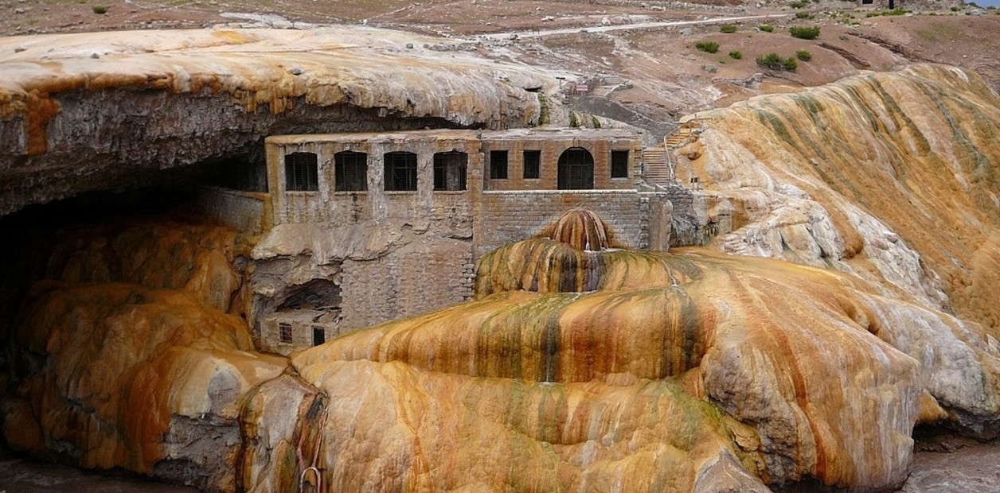
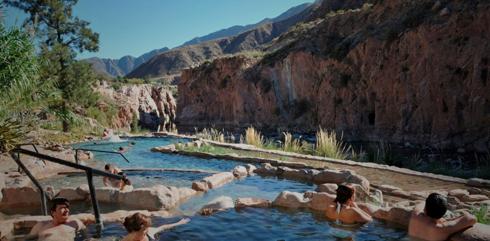

MENDOZA
Las montañas de Mendoza contrastan con los paisajes rurales y oasis transformados por la labor de los huarpes, incas y conquistadores que transitaron por los actuales departamentos de Las Heras y Luján de Cuyo. La cordillera de los Andes presenta grandes picos cubiertos de nieve, entre ellos el Cerro Aconcagua y zigzagueantes ríos como el Río Mendoza.

Esta zona ha sido testigo de la gran proeza sanmartiniana llevada a cabo por el Gral. San Martín y su ejército libertador con el anhelo de alcanzar la libertad de los países sudamericanos. El valle de Potrerillos al pie del Cordón del Plata es el lugar emblemático para los amantes de la aventura y la naturaleza, donde el rafting, trekking, canopy, cabalgatas, son los protagonistas.

Continuado hacia la alta montaña, Uspallata es el centro de estadía que cuenta con una completa base de servicios y es el punto de encuentro de conexiones terrestres de turistas que arriban a la localidad ya sea por el camino de caracoles de Villavicencio o por a RN 7 bordeando el Río Mendoza.

A escasos kilómetros de Penitentes el puente natural de Puente del Inca deja a todos atónitos por su formación geológica y colores, producto de la oxidación de minerales como el azufre y hierro. Además del puente natural pueden apreciarse los restos de los baños termales que fueron parte del hotel homónimo y la antigua capilla que aún se mantiene en pie.

Como marco excepcional, la montaña muestra su mejor rostro turístico en parajes como Cacheuta con sus aguas termales, donde se ofrecen servicios de masajes, hidroterapia o simplemente regocijarse al aire libre.
El Parque Provincial Aconcagua es el atractivo emblema de esta zona cuya temporada se extiende desde noviembre a abril. Los andinistas de todo el mundo llegan con el objetivo de alcanzar la cima o simplemente poder realizar un trekking corto o largo entre caprichosas geoformas, arroyos y nieves perennes.
Las Cuevases el punto culmine del recorrido donde se respira un clima de paz al ascender por un camino de 8 kilómetros de precipicios y pronunciadas curvas hasta arribar al monumento Cristo Redentor que marca los límites entre Argentina y Chile. Este camino es transitable en época estival.
Otra opción para llegar hasta Uspallata desde la Ciudad de Mendoza, es recorrer la RP 52, y atravesar la quebrada de Villavicencio en las serranías de la Precordillera. Villavicencio es reconocido por las propiedades de las aguas minerales y los manantiales circundantes.
En el lugar se encuentra el antiguo hotel homónimo que no funciona como tal sino como un centro de interpretación que recrea la legendaria historia de los visitantes, todo rodeado de bellos jardines. En las proximidades del hotel se encuentra la capilla de Villavicencio que se mantiene como si el tiempo no hubiera pasado.
Pero la identidad de este sitio se complementa con un expectante camino sinuoso que supera las 365 curvas para llegar a la Cruz Jesuítica de Paramillos y luego introducirse en un abandonado complejo minero. También, el Parque Darwin muestra las improntas fosilizadas de araucarias petrificadas, cuyo bosque se extendió en antiguas eras geológicas. Por último, pasando por el colorido Cordón de Bonilla, se accede finalmente al valle de Uspallata.